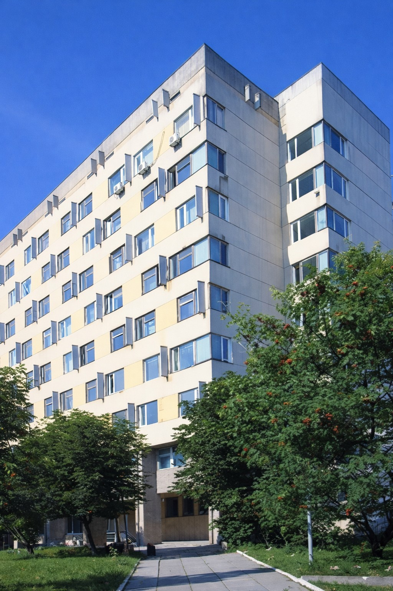
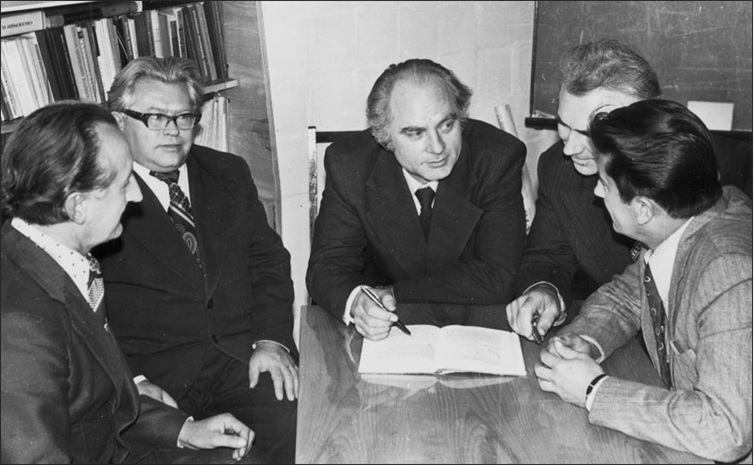
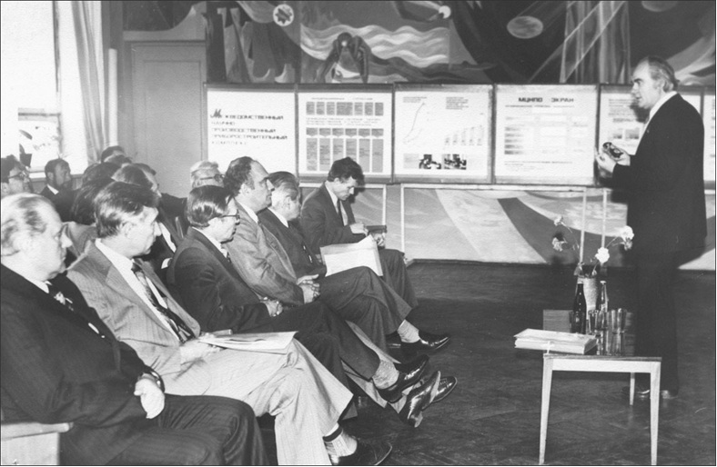

Головний корпус Інституту у Львові
Інститут прикладних проблем механіки і математики ім. Я. С. Підстригача НАН України є провідною науковою установою західного регіону України. У ньому проводяться важливі дослідження в галузі математики, математичних проблем механіки та математичного моделювання. Тут працює відомий в Україні і в світі науковий колектив, характерною особливістю якого є поєднання високого теоретичного рівня досліджень з розумінням практичних запитів сьогодення.
Офіційною датою створення Інституту є 1978 рік, але вже з 1973 року він розпочав функціонувати як окрема наукова установа — Львівський філіал математичної фізики Інституту математики (ІМ) АН України. Проте творення цього наукового колективу розпочалося значно раніше, коли його засновник Ярослав Степанович Підстригач (1928-1990) разом зі своїми колегами та учнями Ярославом Йосиповичем Бураком, Григорієм Семеновичем Кітом, Петром Степановичем Казімірським (1925-1990), Юрієм Михайловичем Коляном (1936-1990), Богданом Любомировичем Пелехом (1940-1995) та Віталієм Яковичем Скоробогатьком (1927-1996) розпочали свої наукові пошуки в Інституті машинознавства та автоматики, а потім у Фізико-механічному інституті (ФМІ) Академії наук України.
Тут академік АН України Я. С. Підстригач сформував зародок майбутнього інституту, взявши далекоглядно орієнтир на створення колективу, який, підтримуючи на високому рівні свою математичну культуру та постійно розвиваючи новітні математичні напрями, зміг би розв’язувати проблеми опису взаємозв’язаних процесів різної фізичної природи за допомогою засобів прикладної математики і математичного моделювання.
Академік Я. С. Підстригач керував Інститутом до останніх днів свого життя. У 1990-2002 рр. Інститут очолював член-кореспондент НАН України Григорій Семенович Кіт, який доклав багато зусиль для збереження і подальшого розвитку наукового потенціалу Інституту (зараз Г. С. Кіт — радник при дирекції Інституту). З січня 2003 року директором Інституту є доктор фізико-математичних наук, професор Роман Михайлович Кушнір.
На початку 1973 року за переводом із Фізико-механічного інституту АН України було зараховано у Львівський філіал математичної фізики Інституту математики АН України 99 співробітників Сектору математики і механіки і 18 аспірантів з відривом від виробництва. Ці співробітники стали працівниками 5 наукових відділів:
- механіки реального твердого тіла (кер. відділу — акад. АН України Я. С. Підстригач);
- теорії диференціальних рівнянь (кер. відділу — д. ф.-м. н. В. Я. Скоробогатько);
- математичної фізики (кер. відділу — д. ф.-м. н. Я. Й. Бурак);
- алгебри і моделювання (кер. відділу — к. ф.-м. н. П. С. Казімірський);
- математичної теорії деформації і руйнуванння тонкостінних елементів конструкцій (кер. відділу — д. ф.-м. н. Б. Л. Пелех).
Крім того, до складу Філіалу ввійшли також 4 геофізичні підрозділи.
Всього станом на 01.03.73 р. у Львівському філіалі математичної фізики ІМ АН України працювало 238 співробітників, з них — 125 наукових, у т. ч. 5 докторів (Я. С. Підстригач, Я. Й. Бурак, Ю. М. Коляно, Б. Л. Пелех, В. Я. Скоробогатько) і 29 кандидатів наук.
У Філіалі розпочато інтенсивний, з охопленням широкого кола проблем, розвиток досліджень з механіки деформівного твердого тіла, термомеханіки, нерівноважної термодинаміки, математичного моделювання взаємозв’язаних процесів різної фізичної природи, фундаментальних і прикладних проблем математики, які дістали визнання і підтримку наукової громадськості. Прикладні аспекти цих досліджень, спрямовані на розрахунок елементів конструкцій, які працюють в агресивних середовищах, при підвищених і змінних рівнях температур та силових навантажень, в потужних електромагнітних полях, з урахуванням взаємозв’язку фізико-механічних процесів, поверхневих явищ, структури матеріалів та інших факторів різної природи, знайшли застосування у промисловості при розробці елементів нової техніки і сучасних технологій.
Протягом п’яти з половиною років проходило становлення колективу Філіалу, якісно зростав його науковий потенціал, було одержано ряд вагомих результатів як у галузі фундаментальних досліджень, так і у виконанні значних прикладних розробок. Все це стало підставою для прийняття постанови Ради Міністрів УРСР № 428 від 22 серпня 1978 р. «Про організацію в м. Львові Інституту прикладних проблем механіки і математики АН УРСР», відповідно до якої за постановою Президії АН УРСР № 366 від 7 вересня 1978 року він і був організований на базі Львівського філіалу математичної фізики ІМ АН України. Інститут очолив академік АН України Я. С. Підстригач.

Я. С. Підстригач (в центрі) з керівниками відділів: Я. Й. Бураком, Ю. М. Коляном, Г. В. Пляцком та Б. Л. Пелехом (зліва направо), 1979 р.
На новостворений Інститут було покладено завдання виконання наукових досліджень з таких основних напрямків:
- дослідження фундаментальних і прикладних проблем механіки деформівного твердого тіла;
- вивчення процесів виникнення, взаємодії і поширення полів різної природи стосовно до задач механіки, фізичного матеріалознавства, геофізики і нової техніки;
- побудова теоретичних моделей деформівних твердих тіл з розширеними фізико-механічними властивостями;
- розробка теоретичних і прикладних проблем математики стосовно до некласичних задач механіки.
Структурно Інститут складався з 8 відділів:
- механіки деформівного твердого тіла (зав. відділу — акад. АН України Я. С. Підстригач) з неструктурною лабораторією геодинаміки (кер. - к. т. н. М. І. Мельничук);
- теорії диференціальних рівнянь (зав. відділу — д. ф.-м. н. В. Я. Скоробогатько);
- теорії фізико-механічних полів (зав. відділу — д. ф.-м. н. Я. Й. Бурак) з 2 неструктурними лабораторіями — електромагнітного поля Землі (кер. - к. ф.-м. н А. І. Білінський) і електрометрії (кер. — к. г.-м. н. Я. С. Сапу жак);
- алгебри і моделювання (зав. відділу — к. ф.-м. н. П. С. Казімірський);
- механіки тонкостінних елементів конструкцій (зав. відділу — д. ф.-м. н. Б. Л. Пелех);
- теорії і методів фізико-механічного моделювання (зав. відділу — д. т. н. Г. В. Пляцко);
- інтегральних рівнянь (зав. відділу — д. ф.-м. н. Ю. Й. Черський);
- термомеханіки (зав. відділу — д. т. н. Ю. М. Коляно).

Я.С. Підстригач розповідає про досягнення вчених Інституту комісії АН СРСР (Львів, 1982 р.)
Ріст кадрового потенціалу дозволив створити нові відділи:
- у 1980 р. відділ математичних методів механіки руйнування (зав. відділу — д. ф.-м. н. Г. С. Кіт);
- у 1982 р. відділ механіки неоднорідних тіл (зав. відділу — д. ф.-м. н. В. А. Осадчук);
- у 1983 р. відділ чисельних методів математичної фізики (зав. відділу — д. ф.-м. н. М. М. Войтович);
- у 1985 р. СКТБ Інституту і відділ фізико-механічних методів моделювання і дослідження геополів (зав. відділу — д. г.-м. н. Я. С. Сапужак);
- у 1987 р. відділ нелінійного математичного аналізу (зав. відділу — д. ф.-м. н. А. К. Прикарпатський);
- у 1988 р. відділи математичної теорії програмування і САПР (зав. відділу — д. ф.-м. н. В. О. Вальковський) та крайових задач з частинними похідними (м. Чернівці, зав. відділу — д. ф.-м. н. С. Д. Івасишен);
- у 1989 р. відділ математичної фізики (зав. відділу — д. ф.-м. н. Б. Й. Пташник);
- у 1991 р. відділ математичного моделювання явищ самоорганізації (зав. відділу — д. ф.-м. н. В. В. Гафійчук);
- у 1992 р. відділ оптимізації керованих систем (зав. відділу — д. ф.-м. н. В. Є. Бербюк).
На базі двох наукових відділів геофізичного профілю в 1991 р. було створене Карпатське відділення Інституту геофізики ім. С. І. Субботіна АН України.
В 1990 році Інституту було присвоєно ім’я академіка АН України Я. С. Підстригача (постанова Президії АН України № 313 від 5 грудня 1990 р.).
В 1992 році Обчислювальний центр Інституту реорганізовано в науково-учбовий Центр математичного моделювання і створено науково-виробничий Центр з інформаційних проблем територій, СКТБ Інституту — в Центр аерокосмічної інформації і екологічного моніторингу при Інституті кібернетики АН України.
СУЧАСНИЙ СТАН РОЗВИТКУ ІНСТИТУТУ
На даний час Інститут складається з 15 наукових відділів. В Інституті працюють 234 співробітники, з них 190 наукових співробітників, серед яких 43 доктори наук (четверо — члени-кореспонденти НАН України), і 103 кандидати наук. Інститут входить до складу Відділення математики НАН України.
У Центрі математичного моделювання налічується 49 співробітників, із них 25 наукових, в т. ч. один член-кореспондент НАН України, 7 докторів та 12 кандидатів наук. У науково-виробничому Центрі з інформаційних проблем територій працює 12 співробітників, в т. ч. 3 кандидати наук.
Основними науковими напрямами досліджень Інституту на даний час є:
- операторні методи функціонального аналізу і лінійної алгебри та їх застосування;
- теорія диференціальних рівнянь та динамічних систем;
- термодинамічні основи побудови математичних моделей механіки деформівних твердих тіл з урахуванням структури і взаємозв’язку процесів різної природи;
- математичні методи розрахунку, оптимізації та прогнозування деформативності, міцності, довговічності та поведінки механічних систем.
За цими напрямами проводять дослідження наукові відділи Інституту.
Пріоритетні наукові дослідження Центру проводяться з математичного моделювання, математичної фізики, обчислювального експерименту та оптимізації.
ІППММ ім. Я. С. Підстригача НАН України зберігає та примножує свій високий науковий потенціал. Дальшого утвердження набули наукові школи з математичного моделювання та дослідження фізико-механічних процесів і контактних явищ в однорідних тілах і неоднорідних композиційних структурах зі сталими та залежними від температури властивостями; з проблем континуально-термодинамічного моделювання та оптимізації нелінійних локально нерівноважних систем; з некласичних задач теорії диференціальних рівнянь із частинними похідними та аналітичних методів теорії наближень. В останні роки формуються наукові школи з математичних проблем електромеханотермодифузії; з функціонально-операторних та алгебраїчних методів і теорії інтегрованих та дисипативних динамічних систем на нескінченновимірних многовидах із застосуванням до явищ самоорганізації.
У ЦММ Інституту подальшого розвитку набуває наукова школа з континуально-термодинамічного моделювання та оптимізації нелінійних локально-нерівноважних систем.
При Інституті успішно функціонує спеціалізована вчена рада по захисту докторських і кандидатських дисертацій за спеціальностями «механіка деформівного твердого тіла» і «математичне моделювання та обчислювальні методи», є аспірантура з 8-и спеціальностей:
- математичний аналіз;
- диференціальні рівняння;
- математична фізика;
- геометрія та топологія;
- алгебра та теорія чисел;
- обчислювальна математика;
- механіка деформівного твердого тіла;
- математичне моделювання та обчислювальні методи
та докторантура з 5-и спеціальностей:
- математичний аналіз;
- диференціальні рівняння;
- алгебра та теорія чисел;
- механіка деформівного твердого тіла;
- математичне моделювання та обчислювальні методи.
Інститут проводить підготовку молодих спеціалістів на кафедрі математичного моделювання фізико-механічних процесів Львівського національного університету ім. Ів. Франка та філії кафедри лазерної техніки та оптоелектричних систем Національного університету «Львівська політехніка». У 2006 році створено науково-навчальний комплекс з прикладної математики ІППММ НАНУ та Інституту прикладної математики та фундаментальних наук Національного університету «Львівська політехніка». В Інституті пройшли стажування декілька сотень викладачів вузів західного регіону України.
Співробітники Інституту регулярно проходять стажування за кордоном, зокрема в провідних наукових центрах Австрії, Англії, Італії, Канади, Нідерландів, Німеччини, Польщі, США, Чехії, Франції, Швейцарії, Швеції та ін.
Інститутом з 1975 року видається науковий журнал «Математичні методи та фізико-механічні поля». В 2003 р. започатковано випуск щорічного збірника праць «Прикладні проблеми механіки і математики», з 2004 р. ЦММ Інституту видає збірник наукових праць «Фізико-математичне моделювання та інформаційні технології». Інститут налагодив міжнародне науково-технічне співробітництво в рамках програм і планів співпраці за прямими зв’язками, укладеними угодами про спільні дослідження з провідними науковими установами ряду зарубіжних країн. Вчені Інституту брали участь у низці престижних наукових конференцій.
Співробітники Інституту є членами багатьох міжнародних наукових товариств, зокрема, Американського математичного товариства (AMS), Європейського товариства механіків (Euromech), Міжнародної федерації нелінійних аналітиків (IFNA), Європейського товариства з цілісності конструкцій (ESIS), Міжнародного інституту інженерів-електронщиків (IEEE), Німецького товариства з прикладної математики і механіки (GAMM). Інститут співпрацював в рамках укладених угод про спільні дослідження з Інститутом математики АН Бєларусі, Інститутом проблем механіки РАН, Інститутом радіоелектроніки Варшавської політехніки (Польща), Барселонським математичним науково-дослідним центром (Іспанія), Політехнікою Опольською (Польща), Чалмерським технічним університетом (Швеція), Інститутом фундаментальних технологічних досліджень Польської академії наук (Варшава), факультетом прикладної математики Гірничо-металургійної Академії (Краків, Польща), Інститутом металургії та інженерії матеріалів Польської академії наук та ін.
В Інституті функціонує Західно-український осередок Міжнародного науково-технічного товариства IEEE, діяльність якого спрямована на організацію і проведення семінарів та конференцій, розповсюдження інформації про міжнародні наукові конференції, підтримку студентської наукової діяльності та ін.
Активна діяльність проводиться Інститутом в напрямку організації і проведення наукових конференцій, симпозіумів та семінарів. Щороку в Інституті у травні відбуваються традиційні наукові читання, присвячені пам’яті академіка НАН України Я. С. Підстригача. Починаючи з 1983 року, раз у чотири роки, в Інституті відбувається добре відома науковій громадськості України, близького та далекого зарубіжжя Міжнародна наукова конференція «Математичні проблеми механіки неоднорідних структур», засновниками та натхненниками проведення якої стали академік НАН України Я. С. Підстригач і професор Ю. М. Коляно. Раз у три роки проводиться Міжнародна математична наукова конференція ім. В. Я. Скоробагатька.
В Інституті проводиться цілеспрямована робота з отримання індивідуальних і колективних грантів на проведення наукових досліджень від міжнародних фондів, зокрема, УНТЦ, INTAS, CDRF та ін. Близько чверті співробітників Інституту складають молоді вчені, активно працює Рада молодих вчених і спеціалістів.
Інститут і надалі планує розвивати фундаментальні і прикладні дослідження з механіки, математики, математичного моделювання і фізичного матеріалознавства. Зосередивши науковий потенціал вчених на виконанні тематики з пріоритетних напрямків діяльності Інституту, на основі глибоких цілеспрямованих фундаментальних досліджень планується отримати результати прикладного характеру та виробити рекомендації щодо їх практичного використання при оцінці та прогнозуванні міцності і довговічності конструкцій. Інститут і надалі буде розширювати наукові зв’язки, проводити роботу, спрямовану на зміцнення наукового потенціалу, підготовку кадрів високої кваліфікації, поповнення наукового колективу молодими перспективними спеціалістами.